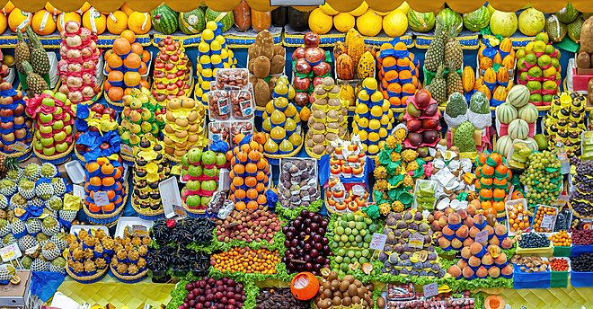

Animal
Animals are multicellular, eukaryotic organisms in the biological kingdom Animalia. With few exceptions, animals consume organic material, breathe oxygen, have myocytes and are able to move, can reproduce sexually, and grow from a hollow sphere of cells, the blastula, during embryonic development. Animals form a clade, meaning that they arose from a single common ancestor. Over 1.5 million living animal species have been described, of which around 1.05 million are insects, over 85,000 are molluscs, and around 65,000 are vertebrates. It has been estimated there are as many as 7.77 million animal species on Earth. Animal body lengths range from 8.5 μm (0.00033 in) to 33.6 m (110 ft). They have complex ecologies and interactions with each other and their environments, forming intricate food webs. The scientific study of animals is known as zoology, and the study of animal behaviors is known as ethology.
Flowers

A flower, also known as a bloom or blossom, is the reproductive structure found in flowering plants (plants of the division Angiospermae). Flowers consist of a combination of vegetative organs sepals that enclose and protect the developing flower, petals that attract pollinators, and reproductive organs that produce gametophytes, which in flowering plants produce gametes. The male gametophytes, which produce sperm, are enclosed within pollen grains produced in the anthers. The female gametophytes are contained within the ovules produced in the carpels.
Fruits
Fruits are the means by which flowering plants (also known as angiosperms) disseminate their seeds. Edible fruits in particular have long propagated using the movements of humans and other animals in a symbiotic relationship that is the means for seed dispersal for the one group and nutrition for the other; humans and many other animals have become dependent on fruits as a source of food.[1] Consequently, fruits account for a substantial fraction of the world's agricultural output, and some (such as the apple and the pomegranate) have acquired extensive cultural and symbolic meanings